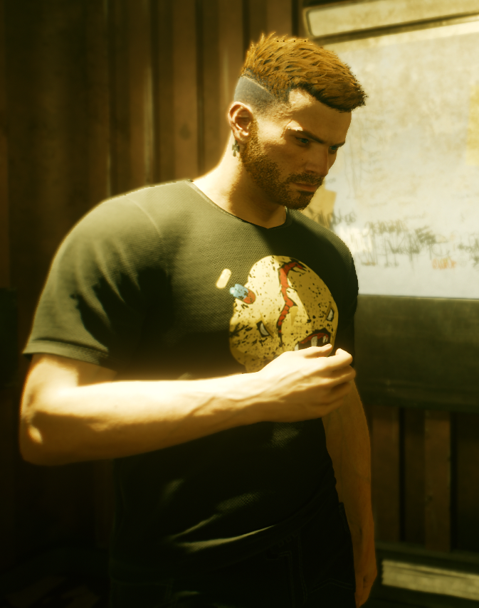

Fist off: Who am I?
I am Ralf, and this is how I think I look like:

... but I actually look like this:
And this? This is the definitive list of my favorite hobbies:
- Playing Dungeons & Dragons
- Playing video games
- Traveling... if there is no pandemic in the world